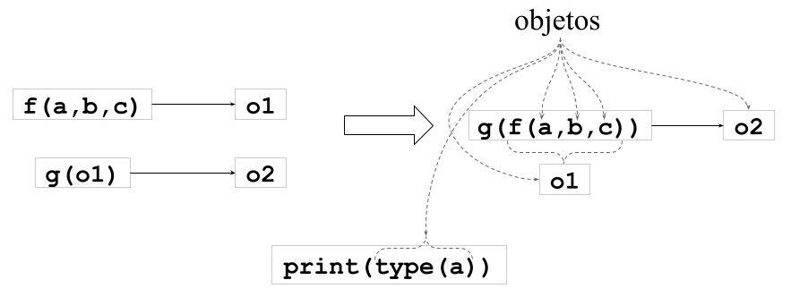
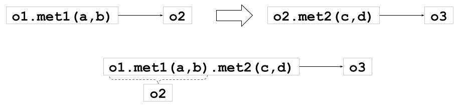

peso = 85.01 Primeros pasos.
La información que vemos cotidianamente en internet, redes sociales, móviles y computadoras personales, está organizada en diferentes tipos y formatos como en hojas de cálculo, imágenes, audio, video, entre otros. La mayor parte de toda esta información está compuesta de texto y números.
En los ejemplos siguientes veremos como definir, manipular y almacenar números y textos.
1.1 Tipos básicos y variables.
En Python es posible definir una variable (un nombre) para almacenar un valor. Por ejemplo, definamos una variable para almacenar el peso de una persona:
Para imprimir el contenido de una variable podemos usar la función print() como sigue:
print(peso)85.0También podemos saber de qué tipo es la variable peso con la función type():
type(peso)floatObserva que la variable pesoes de tipo float, que es uno de los tipos de datos básicos en Python.
Tip 1.1
Como puedes ver, al ejecutar la celda con el código type(peso) se imprime el tipo de la variable. Esto funcionará siempre y cuando nuestro ambiente de trabajo sea interactivo, por ejemplo en Jupyter Lab donde se pueden crear y ejecutar Jupyter Notebooks. Sin embargo conviene siempre agregar la función print() para que la impresión del resultado funcione en cualquier tipo de ambiente. Es decir, un código más funcional sería: print(type(peso)). En lo que sigue usaremos print() para imprimir el resultado de una declaración.
Definamos ahora una variable para almacenar la estatura de una persona, imprimamos el contenido de la variable y su tipo:
# Escribimos las tres instrucciones en una sola celda:
estatura = 1.88
print(estatura)
print(type(estatura))1.88
<class 'float'>Algunas observaciones del código anterior:
- La línea que aparece con un
#al inicio es un comentario, es decir, el intérprete de Python no la ejecuta por lo que es útil solamente para documentar las acciones del código. - Se imprime
1.88que es el contenido de la variablepesoy corresponde al códigoprint(estatura). - Se imprime
<class 'float'>que es el resultado del códigoprint(type(estatura)). - Nota que usando
printantes detypeobtenemos un poco más de información que solo usandotype. En esta última declaración estamos concatenando dos funciones, esto lo explicamos con detalle en la sección 1.2.1.
La función print() puede recibir más de un argumento, por ejemplo:
print("Peso =", peso)
print("Estatura =", estatura)Peso = 85.0
Estatura = 1.88Observa que el primer argumento en ambas líneas son textos los cuales se definen usando comillas "...". El segundo argumento son las variables antes definidas peso y estatura. Podemos proporcionar más argumentos a la función print() por ejemplo:
# Ahora agregamos las unidades
print("Peso =", peso, "[kg]")
print("Estatura =", estatura, "[m]")Peso = 85.0 [kg]
Estatura = 1.88 [m]El resultado del código anterior da más información de las variables.
Recordemos que deseamos calcular el IMC cuya fórmula es:
\[ \text{IMC} = \dfrac{\text{peso [kg]}}{(\text{estatura [m])}^2} \]
En Python esta operación se realiza como sigue:
# Calcular el IMC
IMC = peso / estatura**2Hemos usado dos operadores: / para división y ** para calcular una potencia. Hablaremos más de estos operadores en la sección 1.3.
Para saber cuál fue el resultado de nuestro cálculo hagamos lo siguiente:
print("IMC =", IMC)
print(type(IMC))IMC = 24.049343594386603
<class 'float'>Definamos ahora variables para la edad, el nombre y el estado civil:
edad = 78
nombre = "Brian May"
casado = TrueY ahora imprimimos la información de estas nuevas variables:
print("Edad =", edad, type(edad))
print("Nombre =", nombre, type(nombre))
print("Casado =", casado, type(casado))Edad = 78 <class 'int'>
Nombre = Brian May <class 'str'>
Casado = True <class 'bool'>Observa en la celda anterior que en cada línea de código agregamos una cadena, la variable y el resultado de la función type() como argumentos de la función print(). En cada caso el tipo de variable es distinto: int, str y bool. Estos tres son tipos básicos en Python.
En la siguiente celda obtenemos el contenido de todas las variables definidas hasta el momento:
print("Nombre =", nombre)
print("Edad =", edad, "años")
print("Casado =", casado)
print("Peso =", peso, "[kg]")
print("Estatura =", estatura, "[m]")
print("IMC =", IMC)Nombre = Brian May
Edad = 78 años
Casado = True
Peso = 85.0 [kg]
Estatura = 1.88 [m]
IMC = 24.049343594386603En la siguiente celda obtenemos el tipo de todas las variables definidas hasta el momento:
print("Nombre :", type(nombre))
print("Edad :", type(edad))
print("Casado :", type(casado))
print("Peso :", type(peso))
print("Estatura :", type(estatura))
print("IMC :", type(IMC))Nombre : <class 'str'>
Edad : <class 'int'>
Casado : <class 'bool'>
Peso : <class 'float'>
Estatura : <class 'float'>
IMC : <class 'float'>Vemos que hemos definido variables de los tipos int, float, str y bool. Un tipo adicional que falta en esta lista es el tipo complex.
Nota 1.1
En matemáticas se definen los números complejos por una parte real y por una parte imaginaria, por ejemplo:
\[ c = 12 + 5j \] La parte real es \(12\) y la parte imaginaria es \(5j\).
Observación: en matemáticas se usa \(i\) en vez de \(j\); aquí usamos \(j\) para ser compatibles con Python.
Para definir un número complejo en Python hacemos lo siguiente:
complejo = 12 + 5j # La parte imaginaria lleva una j al finalEl contenido y tipo de una variable de este tipo se obtiene de manera similar a los otros tipos:
print(complejo)
print(type(complejo))El resultado del código anterior es:
(12+5j)
<class 'complex'>Para fortalecer tus conocimientos acerca de variables y tipos básicos revisa los apéndices A y B.
1.2 Funciones incorporadas.
En los ejemplos anteriores hemos usado dos funciones print() y type(). Ambas funciones son parte del conjunto de funciones incorporadas de Python. Estas funciones se pueden usar en cualquier momento pues son parte de la interfaz de Python. La lista completa de funciones incorporadas se puede consultar en Built-in functions.
Para conocer más acerca de la función print() podemos usar otra función incorporada llamada help() como sigue:
help(print)Help on built-in function print in module builtins:
print(*args, sep=' ', end='\n', file=None, flush=False)
Prints the values to a stream, or to sys.stdout by default.
sep
string inserted between values, default a space.
end
string appended after the last value, default a newline.
file
a file-like object (stream); defaults to the current sys.stdout.
flush
whether to forcibly flush the stream.
Otra función incorporada que suele ser muy útil es id() que proporciona la dirección en memoria de una variable. Por ejemplo, para las variables definidas hasta el momento podemos hacer lo siguiente para conocer dónde están almacenadas:
print("Nombre :", id(nombre))
print("Edad :", id(edad))
print("Casado :", id(casado))
print("Peso :", id(peso))
print("Estatura :", id(estatura))
print("IMC :", id(IMC))Nombre : 4393963184
Edad : 4314766168
Casado : 4313810384
Peso : 4386712720
Estatura : 4393376784
IMC : 4393371568Por supuesto es un poco difícil entender los números que proporciona id(), sin embargo la información es útil para conocer si dos variables están haciendo referencia a una misma locación en memoria, de ser así entonces se trata del mismo objeto pero con nombres diferentes. Para entender más al respecto revisa la sección A.5.
El siguiente esquema muestra el nombre, el valor, el tipo y el identificador de las variables definidas en la sección anterior.
| Nombre | Valor o Contenido | Tipo | id en memoria | |
|---|---|---|---|---|
nombre |
\(\rightarrow\) | Brian May |
str |
4393963184 |
edad |
\(\rightarrow\) | 78 |
int |
4314766168 |
casado |
\(\rightarrow\) | True |
bool |
4386712720 |
peso |
\(\rightarrow\) | 85.0 |
float |
4386712720 |
estatura |
\(\rightarrow\) | 1.88 |
float |
4393376784 |
IMC |
\(\rightarrow\) | 24.049343594386603 |
float |
4393371568 |
1.2.1 Composición de funciones.
El uso de funciones anidadas o composición como en el código print(type(peso)) es muy común en Python. La figura 1.1 muestra lo que sucede cuando se combinan varias funciones en una sola declaración. Este estilo de programación nos lleva a lo que se conoce como programación funcional, que se explica con más detalle en la sección P.1.

f(a,b,c) recibe tres argumentos y genera como resultado el objeto o1. Este objeto es posteriormente usado como argumento de la función g() la cual produce como resultado el objeto o2. Estas dos operaciones se pueden escribir en una sola línea como g(f(a,b,c)). De esta manera se construye el objeto o1 al vuelo sin requerir de una variable y es usado inmediatamente por la función g() como su argumento para generar el resultado esperado, en este caso el objeto o2. Como ejemplo de este tipo de construcción en Python se muestra el código print(type(a)). Se pueden anidar tantas funciones como se requiera. En la sección A.5 se explica un poco acerca de objetos y nombres de variables.
1.3 Operadores aritméticos.
En el ejemplo 2.9 usamos los operadores: / y ** para calcular el IMC. Para los tipos numéricos básicos que acabamos de revisar, existen más operaciones aritméticas que se pueden aplicar sobre ellos. Estas operaciones están organizadas como se describe en la sección C.1. A continuación veremos un ejemplo más interesante del uso de estos operadores.
Lo primero que debemos hacer es definir las variables:
t = 2
n = 12
P = 250_000 # formato de entero grande
r = 0.18Verificamos el contenido y el tipo de cada variable:
print(t, type(t), id(t))
print(n, type(n), id(n))
print(P, type(P), id(P))
print(r, type(r), id(r))2 <class 'int'> 4314763736
12 <class 'int'> 4314764056
250000 <class 'int'> 4393378896
0.18 <class 'float'> 4393374800Ahora implementamos la fórmula del interés compuesto: \(A = P (1 + \dfrac{r}{n})^{nt}\)
A = P * (1 + (r/n)) ** (n * t)print("Cantidad final A = ", A)Cantidad final A = 357375.70298225543
Tip 1.2
Observa el uso de paréntesis en la implementación de la fórmula. Este uso de paréntesis es importante para generar el resultado correcto. Algunas veces se pueden omitir los paréntesis, pero se debe tener claro el nivel de precedencia de los operadores, revisa la sección C.2 para más información al respecto.
1.4 Objetos y tipado dinámico.
Python es un lenguaje totalmente Orientado a Objetos lo que significa que todo lo que definimos será un objeto de una clase determinada. Python tiene definidas clases de las cuales es posible construir objetos.
Por ejemplo, la variable peso definida en la sección 1.1 representa el nombre de un objeto de tipo float:
print(peso, type(peso), id(peso))85.0 <class 'float'> 4386712720Observa que el nombre del objeto es peso, el tipo es de la clase <class 'float'>, su contenido es 85.0 y su identificador en memoria es 4386712720. El nombre identifica al objeto dentro del código, el identificador lo distigue dentro de la memoria.
Ahora hagamos lo siguiente:
masa = peso
print(peso, type(peso), id(peso))
print(masa, type(masa), id(masa))85.0 <class 'float'> 4386712720
85.0 <class 'float'> 4386712720Observa que los nombres peso y masa hace referencia al mismo objeto pues tienen el mismo identificador.
Los operadores is y not también pueden ayudar a saber cuando dos objetos son el mismo:
peso is masaTruepeso is not masaFalse# ¿Qué sucederá ahora?
masa = 5
print(peso, type(peso), id(peso))
print(masa, type(masa), id(masa))85.0 <class 'float'> 4386712720
5 <class 'int'> 4314763832Ahora los objetos son diferentes, también los tipos de peso y masa son diferentes.
Podemos usar la función incorporada isinstance() para comprobar de qué tipo son las variables:
print(isinstance(peso, float))
print(isinstance(masa, float))True
Falseprint(isinstance(peso, int))
print(isinstance(masa, int))False
True# ¿y ahora?
masa = 3 + 5j
print(isinstance(peso, complex))
print(isinstance(masa, complex))False
True# Vamos más allá
masa = "En realidad no es lo mismo que peso"
print(peso, type(peso), id(peso))
print(masa, type(masa), id(masa))
print(isinstance(peso, float))
print(isinstance(masa, str))85.0 <class 'float'> 4386712720
En realidad no es lo mismo que peso <class 'str'> 4408609648
True
True
Tip 1.3
Como se puede observar el tipo de masa cambia dependiendo de su contenido, esto es lo que se conoce como tipado dinámico.
1.4.1 Atributos y métodos.
Una clase define atributos y métodos para los objetos.
Por ejemplo, definimos tres objetos:
entero = 1
real = 1.1
complejo = 1 + 2jCada objeto tiene un conjunto de atributos y métodos los cuales dependen del tipo del objeto. Por ejemplo los objetos de tipo entero tienen el método as_integer_ratio() que se aplica como sigue:
entero.as_integer_ratio()(1, 1)El resultado de este método es una tupla que contiene dos números que la ser divididos generan el número original.
El objeto de tipo flotante también tiene un método similar:
real.as_integer_ratio()(2476979795053773, 2251799813685248)Podemos comprobar que el resultado es correcto como sigue:
2476979795053773 / 22517998136852481.1Obtenemos el número real original.
Para los números complejos también tenenmos varios métodos:
complejo.conjugate()(1-2j)Y también se tienen atributos:
complejo.real # la parte real1.0complejo.imag # la parte imaginaria2.01.4.2 Interacción entre objetos.
En este estilo de programación orientado a objetos, es posible tener una interacción entre objetos que es similar a la explicada en la composición de funciones sección 1.2.1.
Por ejemplo, aplicamos el método as_integer_ratio() al objeto real y su resultado se almacena en ratio:
ratio = real.as_integer_ratio()
print(ratio, type(ratio))(2476979795053773, 2251799813685248) <class 'tuple'>Observamos que el resultado es un objeto de tipo tuple el cual tiene también métodos, por ejemplo count(a) cuenta cuántos elementos iguales al argumento a existen en la tupla, en este caso podemos probar lo siguiente:
ratio.count(2476979795053773)1Podemos realizar las operaciones anteriores en una sola línea como sigue:
real.as_integer_ratio().count(2476979795053773)1El estilo de programación anterior se explica en la figura 1.2.

met1(a, b) al objeto o1, esto da como resultado el objeto o2. Después se aplica el método met2(c,d) al objeto o2 para generar un tercer objeto o3. Las dos operaciones anteriores se pueden realizar en un solo paso: o1.met(a,b).met2(c,d). En este ejemplo el objeto o2 se genera al vuelo; además las variables a, b, c y d, que se usan como argumentos en los métodos, se supone que existen y representan otros objetos previamente definidos.